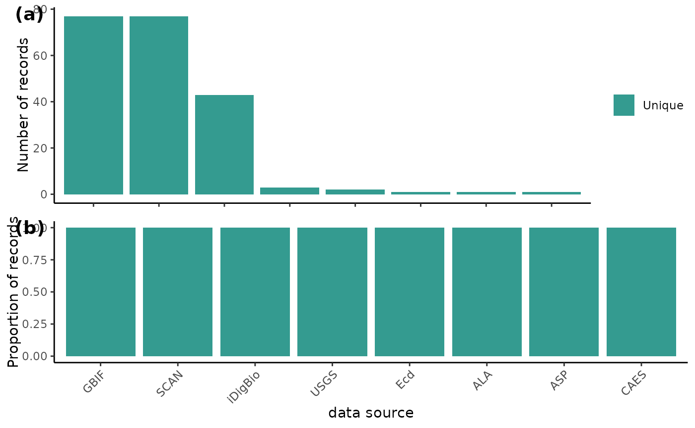

0.0 Script preparation
0.1 Working directory
Choose the path to the root folder in which all other folders can be found.
RootPath <- paste0("/your/path/here")
# Create the working directory in the RootPath if it doesn't exist already
if (!dir.exists(paste0(RootPath, "/Data_acquisition_workflow"))) {
dir.create(paste0(RootPath, "/Data_acquisition_workflow"), recursive = TRUE)
}
# Set the working directory
setwd(paste0(RootPath,"/Data_acquisition_workflow"))For the first time that you run BeeBDC, and if you want to use the renv package to manage your packages, you can install renv…
install.packages("renv", repos = "http://cran.us.r-project.org")and then initialise renv the project.
renv::init(project = paste0(RootPath,"/Data_acquisition_workflow")) If you have already initialised a project, you can instead just activate it.
0.2 Install packages (if needed)
You may need to install gdal on your computer. This can be done on a Mac by using Homebrew in the terminal and the command “brew install gdal”.
To start out, you will need to install BiocManager, devtools, ComplexHeatmap, and rnaturalearthhires to then install and fully use BeeBDC.
if (!require("BiocManager", quietly = TRUE))
install.packages("BiocManager", repos = "http://cran.us.r-project.org")
BiocManager::install("ComplexHeatmap")
# Install remotes if needed
if (!require("remotes", quietly = TRUE))
install.packages("remotes", repos = "http://cran.us.r-project.org")
# Download and then load rnaturalearthhires
remotes::install_github("ropensci/rnaturalearthhires")
install.packages("rnaturalearthhires", repos = "https://ropensci.r-universe.dev", type = "source")
library(rnaturalearthhires)Now install BeeBDC.
devtools::install_github("https://github.com/jbdorey/BeeBDC.git", ref = "main",
force = FALSE)
library(BeeBDC)Snapshot the renv environment.
renv::snapshot(project = paste0(RootPath,"/Data_acquisition_workflow"),
prompt = FALSE)
## The following package(s) will be updated in the lockfile:
##
## # RSPM -----------------------------------------------------------------------
## - renv [* -> 1.0.2]
##
## The version of R recorded in the lockfile will be updated:
## - R [* -> 4.3.1]
##
## - Lockfile written to "/tmp/Rtmp6JSxtC/Data_acquisition_workflow/renv.lock".Set up the directories used by BeeBDC. These directories include where the data, figures, reports, etc. will be saved. The RDoc needs to be a path RELATIVE to the RootPath; i.e., the file path from which the two diverge.
BeeBDC::dirMaker(
RootPath = RootPath,
RDoc = "vignettes/BeeBDC_main.Rmd") %>%
# Add paths created by this function to the environment()
list2env(envir = environment())0.3 Load packages
Load packages.
lapply(c("ComplexHeatmap", "magrittr"),
library, character.only = TRUE)
## Loading required package: grid
##
## Attaching package: 'grid'
## The following object is masked from 'package:terra':
##
## depth
## ========================================
## ComplexHeatmap version 2.16.0
## Bioconductor page: http://bioconductor.org/packages/ComplexHeatmap/
## Github page: https://github.com/jokergoo/ComplexHeatmap
## Documentation: http://jokergoo.github.io/ComplexHeatmap-reference
##
## If you use it in published research, please cite either one:
## - Gu, Z. Complex Heatmap Visualization. iMeta 2022.
## - Gu, Z. Complex heatmaps reveal patterns and correlations in multidimensional
## genomic data. Bioinformatics 2016.
##
##
## The new InteractiveComplexHeatmap package can directly export static
## complex heatmaps into an interactive Shiny app with zero effort. Have a try!
##
## This message can be suppressed by:
## suppressPackageStartupMessages(library(ComplexHeatmap))
## ========================================
##
## Attaching package: 'ComplexHeatmap'
## The following object is masked from 'package:terra':
##
## draw
## The following object is masked from 'package:R.utils':
##
## draw1.0 Data merge
Attention:
Although each line of code has been
validated, in order to save time knitting the R
markdown document the next section is display only. If
you are not data merging (section 1.0) or preparing the data (section
2.0), feel free to skip to Section 3.0 Initial flags.
1.1 Download ALA data
Download ALA data and create a new file in the DataPath to put those data into. You should also first make an account with ALA in order to download your data — https://auth.ala.org.au/userdetails/registration/createAccount
BeeBDC::atlasDownloader(path = DataPath,
userEmail = "your@email.edu.au",
atlas = "ALA",
ALA_taxon = "Apiformes")1.2 Import and merge ALA, SCAN, iDigBio, and GBIF data
Supply the path to where the data is, the save_type is either “csv_files” or “R_file”.
DataImp <- BeeBDC::repoMerge(path = DataPath,
occ_paths = BeeBDC::repoFinder(path = DataPath),
save_type = "R_file")If there is an error in finding a file, run repoFinder()
by itself to troubleshoot. For example:
#BeeBDC::repoFinder(path = DataPath)
#OUTPUT:
#$ALA_data
#[1] "F:/BeeDataCleaning2022/BeeDataCleaning/BeeDataCleaning/BeeData/ALA_galah_path/galah_download_2022-09-15/data.csv"
#$GBIF_data
#[1] "F:/BeeDataCleaning2022/BeeDataCleaning/BeeDataCleaning/BeeData/GBIF_webDL_30Aug2022/0000165-220831081235567/occurrence.txt"
#[2] "F:/BeeDataCleaning2022/BeeDataCleaning/BeeDataCleaning/BeeData/GBIF_webDL_30Aug2022/0436695-210914110416597/occurrence.txt"
#[3] "F:/BeeDataCleaning2022/BeeDataCleaning/BeeDataCleaning/BeeData/GBIF_webDL_30Aug2022/0436697-210914110416597/occurrence.txt"
#[4] "F:/BeeDataCleaning2022/BeeDataCleaning/BeeDataCleaning/BeeData/GBIF_webDL_30Aug2022/0436704-210914110416597/occurrence.txt"
#[5] "F:/BeeDataCleaning2022/BeeDataCleaning/BeeDataCleaning/BeeData/GBIF_webDL_30Aug2022/0436732-210914110416597/occurrence.txt"
#[6] "F:/BeeDataCleaning2022/BeeDataCleaning/BeeDataCleaning/BeeData/GBIF_webDL_30Aug2022/0436733-210914110416597/occurrence.txt"
#[7] "F:/BeeDataCleaning2022/BeeDataCleaning/BeeDataCleaning/BeeData/GBIF_webDL_30Aug2022/0436734-210914110416597/occurrence.txt"
#$iDigBio_data
#[1] "F:/BeeDataCleaning2022/BeeDataCleaning/BeeDataCleaning/BeeData/iDigBio_webDL_30Aug2022/5aa5abe1-62e0-4d8c-bebf-4ac13bd9e56f/occurrence_raw.csv"
#$SCAN_data
#character(0)
#Failing because SCAN_data seems to be missing. Downloaded separatly from the one driveLoad in the most-recent version of these data if needed. This will return a list with:
The occurrence dataset with attributes (.$Data_WebDL)
-
The appended eml file (.$eml_files)
DataImp <- BeeBDC::importOccurrences(path = DataPath, fileName = "BeeData_")
1.3 Import USGS Data
The USGS_formatter() will find, import, format, and
create metadata for the USGS dataset. The pubDate must be in
day-month-year format.
USGS_data <- BeeBDC::USGS_formatter(path = DataPath, pubDate = "19-11-2022")1.4 Formatted Source Importer
Use this importer to find files that have been formatted and need to be added to the larger data file.
The attributes file must contain “attribute” in its name, and the occurrence file must not.
Complete_data <- BeeBDC::formattedCombiner(path = DataPath,
strings = c("USGS_[a-zA-Z_]+[0-9]{4}-[0-9]{2}-[0-9]{2}"),
# This should be the list-format with eml attached
existingOccurrences = DataImp$Data_WebDL,
existingEMLs = DataImp$eml_files) In the column catalogNumber, remove “.*specimennumber:” as what comes after should be the USGS number to match for duplicates.
Complete_data$Data_WebDL <- Complete_data$Data_WebDL %>%
dplyr::mutate(catalogNumber = stringr::str_replace(catalogNumber,
pattern = ".*\\| specimennumber:",
replacement = ""))
1.5 Save data
Choose the type of data format you want to use in saving your work in 1.x.
BeeBDC::dataSaver(path = DataPath,# The main path to look for data in
save_type = "CSV_file", # "R_file" OR "CSV_file"
occurrences = Complete_data$Data_WebDL, # The existing datasheet
eml_files = Complete_data$eml_files, # The existing EML files
file_prefix = "Fin_") # The prefix for the fileNames
rm(Complete_data, DataImp)2.0 Data preparation
The data preparatin section of the script relates mostly to integrating bee occurrence datasets and corrections and so may be skipped by many general taxon users.
2.1 Standardise datasets
You may either use:
- the bdc import method (works well with general datasets) or
- the jbd import method (works well with above data merge)
a. bdc import
The bdc import is NOT truly supported here, but provided as an example. Please go to section 2.1b below. Read in the bdc metadata and standardise the dataset to bdc.
bdc_metadata <- readr::read_csv(paste(DataPath, "out_file", "bdc_integration.csv", sep = "/"))
# ?issue — datasetName is a darwinCore field already!
# Standardise the dataset to bdc
db_standardized <- bdc::bdc_standardize_datasets(
metadata = bdc_metadata,
format = "csv",
overwrite = TRUE,
save_database = TRUE)
# read in configuration description file of the column header info
config_description <- readr::read_csv(paste(DataPath, "Output", "bdc_configDesc.csv",
sep = "/"),
show_col_types = FALSE, trim_ws = TRUE)
b. jbd import
Find the path, read in the file, and add the database_id column.
occPath <- BeeBDC::fileFinder(path = DataPath, fileName = "Fin_BeeData_combined_")
db_standardized <- readr::read_csv(occPath,
# Use the basic ColTypeR function to determine types
col_types = BeeBDC::ColTypeR(), trim_ws = TRUE) %>%
dplyr::mutate(database_id = paste("Dorey_data_",
1:nrow(.), sep = ""),
.before = family)c. optional thin
You can thin the dataset for TESTING ONLY!
check_pf <- check_pf %>%
# take every 100th record
filter(row_number() %% 100 == 1)2.2 Paige dataset
Paige Chesshire’s cleaned American dataset — https://doi.org/10.1111/ecog.06584
Import data
If you haven’t figured it out by now, don’t worry about the column name warning — not all columns occur here.
PaigeNAm <- readr::read_csv(paste(DataPath, "Paige_data", "NorAmer_highQual_only_ALLfamilies.csv",
sep = "/"), col_types = BeeBDC::ColTypeR()) %>%
# Change the column name from Source to dataSource to match the rest of the data.
dplyr::rename(dataSource = Source) %>%
# EXTRACT WAS HERE
# add a NEW database_id column
dplyr::mutate(
database_id = paste0("Paige_data_", 1:nrow(.)),
.before = scientificName) Attention:
It is recommended to run the below
code on the full bee dataset with more than 16GB RAM. Robert ran this on
a laptop with 16GB RAM and an Intel(R) Core(TM) i7-8550U processor (4
cores and 8 threads) — it struggled.
Merge Paige’s data with downloaded data
db_standardized <- BeeBDC::PaigeIntegrater(
db_standardized = db_standardized,
PaigeNAm = PaigeNAm,
# This is a list of columns by which to match Paige's data to the most-recent download with.
# Each vector will be matched individually
columnStrings = list(
c("decimalLatitude", "decimalLongitude",
"recordNumber", "recordedBy", "individualCount", "samplingProtocol",
"associatedTaxa", "sex", "catalogNumber", "institutionCode", "otherCatalogNumbers",
"recordId", "occurrenceID", "collectionID"), # Iteration 1
c("catalogNumber", "institutionCode", "otherCatalogNumbers",
"recordId", "occurrenceID", "collectionID"), # Iteration 2
c("decimalLatitude", "decimalLongitude",
"recordedBy", "genus", "specificEpithet"),# Iteration 3
c("id", "decimalLatitude", "decimalLongitude"),# Iteration 4
c("recordedBy", "genus", "specificEpithet", "locality"), # Iteration 5
c("recordedBy", "institutionCode", "genus",
"specificEpithet","locality"),# Iteration 6
c("occurrenceID","decimalLatitude", "decimalLongitude"),# Iteration 7
c("catalogNumber","decimalLatitude", "decimalLongitude"),# Iteration 8
c("catalogNumber", "locality") # Iteration 9
) )Remove spent data.
rm(PaigeNAm)2.3 USGS
The USGS dataset also partially occurs on GBIF from BISON. However, the occurrence codes are in a silly place… We will correct these here to help identify duplicates later.
db_standardized <- db_standardized %>%
# Remove the discoverlife html if it is from USGS
dplyr::mutate(occurrenceID = dplyr::if_else(
stringr::str_detect(occurrenceID, "USGS_DRO"),
stringr::str_remove(occurrenceID, "http://www\\.discoverlife\\.org/mp/20l\\?id="),
occurrenceID)) %>%
# Use otherCatalogNumbers when occurrenceID is empty AND when USGS_DRO is detected there
dplyr::mutate(
occurrenceID = dplyr::if_else(
stringr::str_detect(otherCatalogNumbers, "USGS_DRO") & is.na(occurrenceID),
otherCatalogNumbers, occurrenceID)) %>%
# Make sure that no eventIDs have snuck into the occurrenceID columns
# For USGS_DRO, codes with <6 digits are event ids
dplyr::mutate(
occurrenceID = dplyr::if_else(stringr::str_detect(occurrenceID, "USGS_DRO", negate = TRUE),
# Keep occurrenceID if it's NOT USGS_DRO
occurrenceID,
# If it IS USGS_DRO and it has => 6 numbers, keep it, else, NA
dplyr::if_else(stringr::str_detect(occurrenceID, "USGS_DRO[0-9]{6,10}"),
occurrenceID, NA_character_)),
catalogNumber = dplyr::if_else(stringr::str_detect(catalogNumber, "USGS_DRO", negate = TRUE),
# Keep catalogNumber if it's NOT USGS_DRO
catalogNumber,
# If it IS USGS_DRO and it has => 6 numbers, keep it, else, NA
dplyr::if_else(stringr::str_detect(catalogNumber, "USGS_DRO[0-9]{6,10}"),
catalogNumber, NA_character_)))2.4 Additional datasets
Import additional and potentially private datasets.
Note: Private dataset functions are provided but the data itself is not integrated here until those datasets become freely available.
There will be some warnings were a few rows may not be formatted correctly or where dates fail to parse. This is normal.
a. EPEL
Guzman, L. M., Kelly, T. & Elle, E. A data set for pollinator diversity and their interactions with plants in the Pacific Northwest. Ecology, e3927 (2022). https://doi.org/10.1002/ecy.3927
EPEL_Data <- BeeBDC::readr_BeeBDC(dataset = "EPEL",
path = paste0(DataPath, "/Additional_Datasets"),
inFile = "/InputDatasets/bee_data_canada.csv",
outFile = "jbd_EPEL_data.csv",
dataLicense = "https://creativecommons.org/licenses/by-nc-sa/4.0/")
b. Allan Smith-Pardo
Data from Allan Smith-Pardo
ASP_Data <- BeeBDC::readr_BeeBDC(dataset = "ASP",
path = paste0(DataPath, "/Additional_Datasets"),
inFile = "/InputDatasets/Allan_Smith-Pardo_Dorey_ready2.csv",
outFile = "jbd_ASP_data.csv",
dataLicense = "https://creativecommons.org/licenses/by-nc-sa/4.0/")
c. Minckley
Data from Robert Minckley
BMin_Data <- BeeBDC::readr_BeeBDC(dataset = "BMin",
path = paste0(DataPath, "/Additional_Datasets"),
inFile = "/InputDatasets/Bob_Minckley_6_1_22_ScanRecent-mod_Dorey.csv",
outFile = "jbd_BMin_data.csv",
dataLicense = "https://creativecommons.org/licenses/by-nc-sa/4.0/")
d. BMont
Delphia, C. M. Bumble bees of Montana. https://www.mtent.org/projects/Bumble_Bees/bombus_species.html. (2022)
BMont_Data <- BeeBDC::readr_BeeBDC(dataset = "BMont",
path = paste0(DataPath, "/Additional_Datasets"),
inFile = "/InputDatasets/Bombus_Montana_dorey.csv",
outFile = "jbd_BMont_data.csv",
dataLicense = "https://creativecommons.org/licenses/by-sa/4.0/")
e. Ecd
Ecdysis. Ecdysis: a portal for live-data arthropod collections, https://ecdysis.org/index.php (2022).
Ecd_Data <- BeeBDC::readr_BeeBDC(dataset = "Ecd",
path = paste0(DataPath, "/Additional_Datasets"),
inFile = "/InputDatasets/Ecdysis_occs.csv",
outFile = "jbd_Ecd_data.csv",
dataLicense = "https://creativecommons.org/licenses/by-nc-sa/4.0/")
f. Gai
Gaiarsa, M. P., Kremen, C. & Ponisio, L. C. Pollinator interaction flexibility across scales affects patch colonization and occupancy. Nature Ecology & Evolution 5, 787-793 (2021). https://doi.org/10.1038/s41559-021-01434-y
Gai_Data <- BeeBDC::readr_BeeBDC(dataset = "Gai",
path = paste0(DataPath, "/Additional_Datasets"),
inFile = "/InputDatasets/upload_to_scan_Gaiarsa et al_Dorey.csv",
outFile = "jbd_Gai_data.csv",
dataLicense = "https://creativecommons.org/licenses/by-nc-sa/4.0/")
g. CAES
From the Connecticut Agricultural Experiment Station.
Zarrillo, T. A., Stoner, K. A. & Ascher, J. S. Biodiversity of bees (Hymenoptera: Apoidea: Anthophila) in Connecticut (USA). Zootaxa (Accepted).
Ecdysis. Occurrence dataset (ID: 16fca9c2-f622-4cb1-aef0-3635a7be5aeb). https://ecdysis.org/content/dwca/CAES-CAES_DwC-A.zip. (2023)
CAES_Data <- BeeBDC::readr_BeeBDC(dataset = "CAES",
path = paste0(DataPath, "/Additional_Datasets"),
inFile = "/InputDatasets/CT_BEE_DATA_FROM_PBI.xlsx",
outFile = "jbd_CT_Data.csv",
sheet = "Sheet1",
dataLicense = "https://creativecommons.org/licenses/by-nc-sa/4.0/")h. GeoL
GeoL_Data <- BeeBDC::readr_BeeBDC(dataset = "GeoL",
path = paste0(DataPath, "/Additional_Datasets"),
inFile = "/InputDatasets/Geolocate and BELS_certain and accurate.xlsx",
outFile = "jbd_GeoL_Data.csv",
dataLicense = "https://creativecommons.org/licenses/by-nc-sa/4.0/")i. EaCO
EaCO_Data <- BeeBDC::readr_BeeBDC(dataset = "EaCO",
path = paste0(DataPath, "/Additional_Datasets"),
inFile = "/InputDatasets/Eastern Colorado bee 2017 sampling.xlsx",
outFile = "jbd_EaCo_Data.csv",
dataLicense = "https://creativecommons.org/licenses/by-nc-sa/4.0/")j. FSCA
Florida State Collection of Arthropods
FSCA_Data <- BeeBDC::readr_BeeBDC(dataset = "FSCA",
path = paste0(DataPath, "/Additional_Datasets"),
inFile = "InputDatasets/fsca_9_15_22_occurrences.csv",
outFile = "jbd_FSCA_Data.csv",
dataLicense = "https://creativecommons.org/licenses/by-nc-sa/4.0/")k. Texas SMC
Published or unpublished data from Texas literature not in an online database, usually copied into spreadsheet from document format, or otherwise copied from a very differently-formatted spreadsheet. Unpublished or partially published data were obtained with express permission from the lead author.
SMC_Data <- BeeBDC::readr_BeeBDC(dataset = "SMC",
path = paste0(DataPath, "/Additional_Datasets"),
inFile = "/InputDatasets/TXbeeLitOccs_31Oct22.csv",
outFile = "jbd_SMC_Data.csv",
dataLicense = "https://creativecommons.org/licenses/by-nc-sa/4.0/")
l. Texas Bal
Data with GPS coordinates (missing accidentally from records on Dryad) from Ballare, K. M., Neff, J. L., Ruppel, R. & Jha, S. Multi-scalar drivers of biodiversity: local management mediates wild bee community response to regional urbanization. Ecological Applications 29, e01869 (2019), https://doi.org/10.1002/eap.1869. The version on Dryad is missing site GPS coordinates (by accident). Kim is okay with these data being made public as long as her paper is referenced. - Elinor Lichtenberg
Bal_Data <- BeeBDC::readr_BeeBDC(dataset = "Bal",
path = paste0(DataPath, "/Additional_Datasets"),
inFile = "/InputDatasets/Beedata_ballare.xlsx",
outFile = "jbd_Bal_Data.csv",
sheet = "animal_data",
dataLicense = "https://creativecommons.org/licenses/by-nc-sa/4.0/")m. Palouse Lic
Elinor Lichtenberg’s canola data, which go with a manuscript currently under review. preprint: Lichtenberg, E. M., Milosavljević, I., Campbell, A. J. & Crowder, D. W. Differential effects of soil conservation practices on arthropods and crop yield. bioRxiv, (2022) https://www.biorxiv.org/content/10.1101/2021.12.06.471474v2. These are the data I will be putting on SCAN. - Elinor Lichtenberg
Lic_Data <- BeeBDC::readr_BeeBDC(dataset = "Lic",
path = paste0(DataPath, "/Additional_Datasets"),
inFile = "/InputDatasets/Lichtenberg_canola_records.csv",
outFile = "jbd_Lic_Data.csv",
dataLicense = "https://creativecommons.org/licenses/by-nc-sa/4.0/")n. Arm
Arm_Data <- BeeBDC::readr_BeeBDC(dataset = "Arm",
path = paste0(DataPath, "/Additional_Datasets"),
inFile = "/InputDatasets/Bee database Armando_Final.xlsx",
outFile = "jbd_Arm_Data.csv",
sheet = "Sheet1",
dataLicense = "https://creativecommons.org/licenses/by-nc-sa/4.0/")o. Dor
From several papers: https://doi.org/10.3897/jhr.79.57308, https://doi.org/10.3897/jhr.81.59365, and https://doi.org/10.11646/zootaxa.4674.1.1.
Dor_Data <- BeeBDC::readr_BeeBDC(dataset = "Dor",
path = paste0(DataPath, "/Additional_Datasets"),
inFile = "/InputDatasets/DoreyData.csv",
outFile = "jbd_Dor_Data.csv",
dataLicense = "https://creativecommons.org/licenses/by-nc-sa/4.0/")2.5 Merge all
Remove these spent datasets.
rm(EPEL_Data, ASP_Data, BMin_Data, BMont_Data, Ecd_Data, Gai_Data, CAES_Data,
GeoL_Data, EaCO_Data, FSCA_Data, SMC_Data, Bal_Data, Lic_Data, Arm_Data, Dor_Data)Read in and merge all. There are more readr_BeeBDC()
supported than currently implemented and these represent datasets that
will be publicly released in the future. See
‘?readr_BeeBDC()’ for details.
db_standardized <- db_standardized %>%
dplyr::bind_rows(
readr::read_csv(paste0(DataPath, "/Additional_Datasets",
"/jbd_ASP_data.csv"), col_types = BeeBDC::ColTypeR()),
readr::read_csv(paste0(DataPath, "/Additional_Datasets",
"/jbd_EPEL_data.csv"), col_types = BeeBDC::ColTypeR()),
readr::read_csv(paste0(DataPath, "/Additional_Datasets",
"/jbd_BMin_data.csv"), col_types = BeeBDC::ColTypeR()),
readr::read_csv(paste0(DataPath, "/Additional_Datasets",
"/jbd_BMont_data.csv"), col_types = BeeBDC::ColTypeR()),
readr::read_csv(paste0(DataPath, "/Additional_Datasets",
"/jbd_Ecd_data.csv"), col_types = BeeBDC::ColTypeR()),
readr::read_csv(paste0(DataPath, "/Additional_Datasets",
"/jbd_Gai_data.csv"), col_types = BeeBDC::ColTypeR()),
readr::read_csv(paste0(DataPath, "/Additional_Datasets",
"/jbd_CT_Data.csv"), col_types = BeeBDC::ColTypeR()),
readr::read_csv(paste0(DataPath, "/Additional_Datasets",
"/jbd_GeoL_Data.csv"), col_types = BeeBDC::ColTypeR()),
readr::read_csv(paste0(DataPath, "/Additional_Datasets",
"/jbd_EaCo_Data.csv"), col_types = BeeBDC::ColTypeR()),
readr::read_csv(paste0(DataPath, "/Additional_Datasets",
"/jbd_SMC_Data.csv"), col_types = BeeBDC::ColTypeR()),
readr::read_csv(paste0(DataPath, "/Additional_Datasets",
"/jbd_Bal_Data.csv"), col_types = BeeBDC::ColTypeR()),
readr::read_csv(paste0(DataPath, "/Additional_Datasets",
"/jbd_Lic_Data.csv"), col_types = BeeBDC::ColTypeR()),
readr::read_csv(paste0(DataPath, "/Additional_Datasets",
"/jbd_Arm_Data.csv"), col_types = BeeBDC::ColTypeR()),
readr::read_csv(paste0(DataPath, "/Additional_Datasets",
"/jbd_Dor_Data.csv"), col_types = BeeBDC::ColTypeR())) %>%
# END bind_rows
suppressWarnings(classes = "warning") # End suppressWarnings — due to col_types2.6 Match database_id
If you have prior runs from which you’d like to match database_ids with from the current run, you may use the below script to try to match database_ids with prior runs.
Read in a prior run of choice.
priorRun <- BeeBDC::fileFinder(path = DataPath,
file = "01_prefilter_database_9Aug22.csv") %>%
readr::read_csv(file = ., col_types = BeeBDC::ColTypeR())This function will attempt to find the database_ids from prior runs.
db_standardized <- BeeBDC::idMatchR(
currentData = db_standardized,
priorData = priorRun,
# First matches will be given preference over later ones
matchBy = tibble::lst(c("gbifID", "dataSource"),
c("catalogNumber", "institutionCode", "dataSource", "decimalLatitude",
"decimalLongitude"),
c("occurrenceID", "dataSource","decimalLatitude","decimalLongitude"),
c("recordId", "dataSource","decimalLatitude","decimalLongitude"),
c("id", "dataSource","decimalLatitude","decimalLongitude"),
# Because INHS was entered as it's own dataset but is now included in the GBIF download...
c("catalogNumber", "institutionCode", "dataSource",
"decimalLatitude","decimalLongitude")),
# You can exclude datasets from prior by matching their prefixs — before first underscore:
excludeDataset = c("ASP", "BMin", "BMont", "CAES", "EaCO", "Ecd", "EcoS",
"Gai", "KP", "EPEL", "CAES", "EaCO", "FSCA", "SMC", "Lic", "Arm"))
# Remove redundant files
rm(priorRun)Save the dataset.
db_standardized %>%
readr::write_excel_csv(.,
paste(OutPath_Intermediate, "00_prefilter_database.csv",
sep = "/"))3.0 Initial flags
Read data back in if needed. OutPath_Intermediate (and a few other
directories) should be have been created and saved to the global
environment by dirMaker().
if(!exists("db_standardized")){
db_standardized <- readr::read_csv(paste(OutPath_Intermediate, "00_prefilter_database.csv",
sep = "/"), col_types = BeeBDC::ColTypeR())}
data("bees3sp", package = "BeeBDC")
data("beesRaw", package = "BeeBDC")
db_standardized <- dplyr::bind_rows(beesRaw,
# Only keep a subset of columns from bees3sp
bees3sp %>% dplyr::select(tidyselect::all_of(colnames(beesRaw)), countryCode))For more details about the bdc package, please see their tutorial.
3.1 SciName
Flag occurrences without scientificName provided.
check_pf <- bdc::bdc_scientificName_empty(
data = db_standardized,
sci_name = "scientificName")
##
## bdc_scientificName_empty:
## Flagged 0 records.
## One column was added to the database.
# now that this is saved, remove it to save space in memory
rm(db_standardized) 3.2 MissCoords
Flag occurrences with missing decimalLatitude and decimalLongitude.
check_pf <- bdc::bdc_coordinates_empty(
data = check_pf,
lat = "decimalLatitude",
lon = "decimalLongitude")
##
## bdc_coordinates_empty:
## Flagged 42 records.
## One column was added to the database.3.3 OutOfRange
Flag occurrences that are not on Earth (outside of -180 to 180 or -90 to 90 degrees).
check_pf <- bdc::bdc_coordinates_outOfRange(
data = check_pf,
lat = "decimalLatitude",
lon = "decimalLongitude")
##
## bdc_coordinates_outOfRange:
## Flagged 0 records.
## One column was added to the database.3.4 Source
Flag occurrences that don’t match the basisOfRecord types below.
check_pf <- bdc::bdc_basisOfRecords_notStandard(
data = check_pf,
basisOfRecord = "basisOfRecord",
names_to_keep = c(
# Keep all plus some at the bottom.
"Event",
"HUMAN_OBSERVATION",
"HumanObservation",
"LIVING_SPECIMEN",
"LivingSpecimen",
"MACHINE_OBSERVATION",
"MachineObservation",
"MATERIAL_SAMPLE",
"O",
"Occurrence",
"MaterialSample",
"OBSERVATION",
"Preserved Specimen",
"PRESERVED_SPECIMEN",
"preservedspecimen Specimen",
"Preservedspecimen",
"PreservedSpecimen",
"preservedspecimen",
"S",
"Specimen",
"Taxon",
"UNKNOWN",
"",
NA,
"NA",
"LITERATURE",
"None", "Pinned Specimen", "Voucher reared", "Emerged specimen"
))
##
## bdc_basisOfRecords_notStandard:
## Flagged 1 of the following specific nature:
## MATERIAL_CITATION
## One column was added to the database.3.5 CountryName
Try to harmonise country names.
a. prepare dataset
Fix up country names based on common problems above and extract ISO2 codes for occurrences.
check_pf_noNa <- BeeBDC::countryNameCleanR(
data = check_pf,
# Create a Tibble of common issues in country names and their replacements
commonProblems = dplyr::tibble(problem = c('U.S.A.', 'US','USA','usa','UNITED STATES',
'United States','U.S.A','MX','CA','Bras.','Braz.',
'Brasil','CNMI','USA TERRITORY: PUERTO RICO'),
fix = c('United States of America','United States of America',
'United States of America','United States of America',
'United States of America','United States of America',
'United States of America','Mexico','Canada','Brazil',
'Brazil','Brazil','Northern Mariana Islands','PUERTO.RICO'))
)
## - Using default country names and codes from https:en.wikipedia.org/wiki/ISO_3166-1_alpha-2 - static version from July 2022.b. run function
Get country name from coordinates using a wrapper around the
jbd_country_from_coordinates() function. Because our
dataset is much larger than those used to design bdc,
we have made it so that you can analyse data in smaller pieces.
Additionally, like some other functions in BeeBDC, we
have implemented parallel operations (using mc.cores = #cores in
stepSize = #rowsPerOperation); see ‘?jbd_CfC_chunker()’ for
details. NOTE: In an actual run you should use scale = “large”
suppressWarnings(
countryOutput <- BeeBDC::jbd_CfC_chunker(data = check_pf_noNa,
lat = "decimalLatitude",
lon = "decimalLongitude",
country = "country",
# How many rows to process at a time
stepSize = 1000000,
# Start row
chunkStart = 1,
path = OutPath_Intermediate,
# Normally, please use scale = "large"
scale = "medium",
mc.cores = 1),
classes = "warning")
## - Starting parallel operation. Unlike the serial operation (mc.cores = 1) , a parallel operation will not provide running feedback. Please be patient as this function may take some time to complete. Each chunk will be run on a seperate thread so also be aware of RAM usage.
## - We have updated the country names of 39 occurrences that previously had no country name assigned.c. re-merge
Join these datasets.
check_pf <- dplyr::left_join(check_pf,
countryOutput,
by = "database_id",
suffix = c("", "CO")) %>%
# Take the new country name if the original is NA
dplyr::mutate(country = dplyr::if_else(is.na(country),
countryCO,
country)) %>%
# Remove duplicates if they arose from left_join!
dplyr::distinct()Save the dataset.
check_pf %>%
readr::write_excel_csv(.,
paste(OutPath_Intermediate, "01_prefilter_database.csv",
sep = "/"))Read in if needed.
if(!exists("check_pf")){
check_pf <- readr::read_csv(paste(DataPath,
"Output", "Intermediate", "01_prefilter_database.csv", sep = "/"),
col_types = BeeBDC::ColTypeR())}Remove these interim datasets.
rm(check_pf_noNa, countryOutput)3.6 StandardCoNames
Run the function, which standardises country names and adds ISO2 codes, if needed.
# Standardise country names and add ISO2 codes if needed
check_pf <- bdc::bdc_country_standardized(
# Remove the countryCode and country_suggested columns to avoid an error with
# where two "countryCode" and "country_suggested" columns exist (i.e. if the dataset has been
# run before)
data = check_pf %>% dplyr::select(!tidyselect::any_of(c("countryCode", "country_suggested"))),
country = "country"
)
## Loading auxiliary data: country names
## Standardizing country names
## country found: Argentina
## country found: Australia
## country found: Belgium
## country found: Brazil
## country found: Canada
## country found: Colombia
## country found: Costa Rica
## country found: Ecuador
## country found: Estonia
## country found: Finland
## country found: France
## country found: Germany
## country found: Ireland
## country found: Mexico
## country found: Norway
## country found: South Africa
## country found: Sweden
## country found: Switzerland
##
## bdc_country_standardized:
## The country names of 5 records were standardized.
## Two columns ('country_suggested' and 'countryCode') were added to the database.3.7 TranspCoords
Flag and correct records when decimalLatitude and
decimalLongitude appear to be transposed. We created this
chunked version of bdc::bdc_coordinates_transposed()
because it is very RAM-heavy using our large bee dataset. Like many of
our other ‘jbd_…’ functions there are other improvements - e.g.,
parallel running.
NOTE: Usually you would use scale = “large”, which requires rnaturalearthhires
check_pf <- BeeBDC::jbd_Ctrans_chunker(
# bdc_coordinates_transposed inputs
data = check_pf,
id = "database_id",
lat = "decimalLatitude",
lon = "decimalLongitude",
country = "country",
countryCode = "countryCode",
border_buffer = 0.2, # in decimal degrees (~22 km at the equator)
save_outputs = TRUE,
sci_names = "scientificName",
# chunker inputs
stepSize = 1000000, # How many rows to process at a time
chunkStart = 1, # Start row
append = FALSE, # If FALSE it may overwrite existing dataset
progressiveSave = FALSE,
# In a normal run, please use scale = "large"
scale = "medium",
path = OutPath_Check,
mc.cores = 1
)
## - Running chunker with:
## stepSize = 1,000,000
## chunkStart = 1
## chunkEnd = 1,000,000
## append = FALSE
## - Starting chunk 1...
## From 1 to 1,000,000
## - Finished chunk 1 with 1 remaining. Records examined: 205Get a quick summary of the number of transposed records.
table(check_pf$coordinates_transposed, useNA = "always")Save the dataset.
check_pf %>%
readr::write_excel_csv(.,
paste(OutPath_Intermediate, "01_prefilter_database.csv",
sep = "/"))Read the data in again if needed.
3.8 Coord-country
Collect all country names in the country_suggested column. We rebuilt a bdc function to flag occurrences where the coordinates are inconsistent with the provided country name.
check_pf <- BeeBDC::jbd_coordCountryInconsistent(
data = check_pf,
lon = "decimalLongitude",
lat = "decimalLatitude",
scale = 50,
pointBuffer = 0.01)
## - Downloading naturalearth map...
## Spherical geometry (s2) switched off
## - Extracting initial country names without buffer...
## - Buffering naturalearth map by pointBuffer...
## dist is assumed to be in decimal degrees (arc_degrees).
## - Extracting FAILED country names WITH buffer...
##
## jbd_coordinates_country_inconsistent:
## Flagged 2 records.
## The column, '.coordinates_country_inconsistent', was added to the database.
## - Completed in 1.37 secsSave the dataset.
check_pf %>%
readr::write_excel_csv(.,
paste(OutPath_Intermediate, "01_prefilter_database.csv",
sep = "/"))3.9 GeoRefIssue
This function identifies records whose coordinates can potentially be extracted from locality information, which must be manually checked later.
xyFromLocality <- bdc::bdc_coordinates_from_locality(
data = check_pf,
locality = "locality",
lon = "decimalLongitude",
lat = "decimalLatitude",
save_outputs = FALSE
)
##
## bdc_coordinates_from_locality
## Found 38 records missing or with invalid coordinates but with potentially useful information on locality.
# Save the resultant data
xyFromLocality %>% readr::write_excel_csv(paste(OutPath_Check, "01_coordinates_from_locality.csv",
sep = "/"))Remove spent data.
rm(xyFromLocality)3.10 Flag Absent
Flag the records marked as “absent”.
check_pf <- BeeBDC::flagAbsent(data = check_pf,
PresAbs = "occurrenceStatus")
## \.occurrenceAbsent:
## Flagged 8 absent records:
## One column was added to the database.3.11 flag License
Flag the records that may not be used according to their license information.
check_pf <- BeeBDC::flagLicense(data = check_pf,
strings_to_restrict = "all",
# DON'T flag if in the following dataSource(s)
excludeDataSource = NULL)
## \.unLicensed:
## Flagged 0 records that may NOT be used.
## One column was added to the database.3.12 GBIF issue
Flag select issues that are flagged by GBIF.
check_pf <- BeeBDC::GBIFissues(data = check_pf,
issueColumn = "issue",
GBIFflags = c("COORDINATE_INVALID", "ZERO_COORDINATE"))
## - jbd_GBIFissues:
## Flagged 0
## The .GBIFflags column was added to the database.3.13 Flag Reports
a. Save flags
Save the flags so far. This function will make sure that you keep a copy of everything that has been flagged up until now. This will be updated throughout the script and can accessed at the end, so be wary of moving files around manually. However, these data will also still be maintained in the main running file, so this is an optional fail-safe.
flagFile <- BeeBDC::flagRecorder(
data = check_pf,
outPath = paste(OutPath_Report, sep =""),
fileName = paste0("flagsRecorded_", Sys.Date(), ".csv"),
# These are the columns that will be kept along with the flags
idColumns = c("database_id", "id", "catalogNumber", "occurrenceID", "dataSource"),
# TRUE if you want to find a file from a previous part of the script to append to
append = FALSE)Update the .summary column
check_pf <- BeeBDC::summaryFun(
data = check_pf,
# Don't filter these columns (or NULL)
dontFilterThese = NULL,
# Remove the filtering columns?
removeFilterColumns = FALSE,
# Filter to ONLY cleaned data?
filterClean = FALSE)
## - We will flag all columns starting with '.'
## - summaryFun:
## Flagged 52
## The .summary column was added to the database.c. Reporting
Use bdc to generate reports.
(report <- bdc::bdc_create_report(data = check_pf,
database_id = "database_id",
workflow_step = "prefilter",
save_report = TRUE)
)3.14 Save
Save the intermediate dataset.
check_pf %>%
readr::write_excel_csv(., paste(OutPath_Intermediate, "01_prefilter_output.csv",
sep = "/"))4.0 Taxonomy
For more information about the corresponding bdc functions used in this section, see their tutorial.
Read in the filtered dataset or rename the 3.x dataset for 4.0.
if(!exists("check_pf")){
database <-
readr::read_csv( paste(OutPath_Intermediate, "01_prefilter_output.csv",
sep = "/"), col_types = BeeBDC::ColTypeR())
}else{
# OR rename and remove
database <- check_pf
# Remove spent dataset
rm(check_pf)}Remove names_clean if it already exists (i.e. you have run the following functions before on this dataset before).
4.1 Prep data names
This step cleans the database’s scientificName column.
! MAC: You might need to install gnparser through terminal — brew brew tap gnames/gn brew install gnparser
Attention:
This can be difficult for a Windows
install. Ensure you have the most recent version of R, R Studio, and R
packages. Also, check package ‘rgnparser’ is installed
correctly. If you still can not get the below code to work, you may have
to download the latest version of ‘gnparser’ from here.
You may then need to manually install it and edit your systems
environmental variable PATH to locate ‘gnparser.exe’. See here.
parse_names <-
bdc::bdc_clean_names(sci_names = database$scientificName, save_outputs = FALSE)## The latest gnparser version is v1.7.4
## gnparser has been installed to /home/runner/bin
##
## >> Family names prepended to scientific names were flagged and removed from 0 records.
## >> Terms denoting taxonomic uncertainty were flagged and removed from 0 records.
## >> Other issues, capitalizing the first letter of the generic name, replacing empty names by NA, and removing extra spaces, were flagged and corrected or removed from 1 records.
## >> Infraspecific terms were flagged and removed from 0 records.Keep only the .uncer_terms and names_clean columns.
Merge names with the complete dataset.
4.2 Harmonise taxonomy
Download the custom taxonomy file from the BeeBDC package and Discover Life website.
beesTaxonomy <- BeeBDC::beesTaxonomy()Harmonise the names in the occurrence tibble. This flags the
occurrences without a matched name and matches names to their correct
name according to Discover
Life. You can also use multiple cores to achieve this. See
‘?harmoniseR()’ for details.
database <- BeeBDC::harmoniseR(path = DataPath, #The path to a folder that the output can be saved
taxonomy = beesTaxonomy, # The formatted taxonomy file
data = database,
mc.cores = 1)
## - Formatting taxonomy for matching...
## The names_clean column was not found and will be temporarily copied from scientificName
##
## - Harmonise the occurrence data with unambiguous names...
##
## - Attempting to harmonise the occurrence data with ambiguous names...
## - Formatting merged datasets...
## Removing the names_clean column...
## - We matched valid names to 201 of 205 occurrence records. This leaves a total of 4 unmatched occurrence records.
##
## harmoniseR:
## 4
## records were flagged.
## The column, '.invalidName' was added to the database.
## - We updated the following columns: scientificName, species, family, subfamily, genus, subgenus, specificEpithet, infraspecificEpithet, and scientificNameAuthorship. The previous scientificName column was converted to verbatimScientificName
## - Completed in 1.7 secsYou don’t need this file any more…
rm(beesTaxonomy)Save the harmonised file.
database %>%
readr::write_excel_csv(.,
paste(DataPath, "Output", "Intermediate", "02_taxonomy_database.csv",
sep = "/"))4.3 Save flags
Save the flags so far. This will find the most-recent flag file and append your new data to it. You can double-check the data and number of columns if you’d like to be thorough and sure that all of data are intact.
flagFile <- BeeBDC::flagRecorder(
data = database,
outPath = paste(OutPath_Report, sep =""),
fileName = paste0("flagsRecorded_", Sys.Date(), ".csv"),
idColumns = c("database_id", "id", "catalogNumber", "occurrenceID", "dataSource"),
append = TRUE,
printSummary = TRUE)5.0 Space
The final frontier or whatever.
Read in the latest database.
if(!exists("database")){
database <-
readr::read_csv(paste(OutPath_Intermediate, "02_taxonomy_database.csv", sep = "/"),
col_types = BeeBDC::ColTypeR())}5.1 Coordinate precision
This function identifies records with a coordinate precision below a
specified number of decimal places. For example, the precision of a
coordinate with 1 decimal place is 11.132 km at the equator, i.e., the
scale of a large city. The major difference between the
bdc and BeeBDC functions is that
jbd_coordinates_precision() will only flag occurrences if
BOTH latitude and longitude are rounded (as opposed to only one of
these).
Coordinates with one, two, or three decimal places present a precision of ~11.1 km, ~1.1 km, and ~111 m at the equator, respectively.
check_space <-
BeeBDC::jbd_coordinates_precision(
data = database,
lon = "decimalLongitude",
lat = "decimalLatitude",
ndec = 2 # number of decimals to be tested
)
## jbd_coordinates_precision:
## Flagged 61 records
## The '.rou' column was added to the database.Remove the spent dataset.
rm(database)Save the resulting file.
check_space %>%
readr::write_excel_csv(.,
paste(OutPath_Intermediate, "03_space_inter_database.csv",
sep = "/"))5.2 Common spatial issues
Only run for occurrences through clean_coordinates()
that are spatially ‘valid’.
tempSpace <- check_space %>%
dplyr::filter(!.coordinates_empty == FALSE) %>%
dplyr::filter(!.coordinates_outOfRange == FALSE)Next, we will flag common spatial issues using functions of the package CoordinateCleaner. It addresses some common issues in biodiversity datasets.
tempSpace <-
CoordinateCleaner::clean_coordinates(
x = tempSpace,
lon = "decimalLongitude",
lat = "decimalLatitude",
species = "scientificName",
countries = NULL, # Tests if coords are from x country. This is not needed.
tests = c(
"capitals", # records within 0.5 km of capitals centroids
"centroids", # records within 1 km around country and province centroids
"equal", # records with equal coordinates
"gbif", # records within 1 km of GBIF headquarters. (says 1 degree in package, but code says 1000 m)
"institutions", # records within 100m of zoo and herbaria
"zeros" # records with coordinates 0,0
# "seas" # Not flagged as this should be flagged by coordinate country inconsistent
),
capitals_rad = 1000,
centroids_rad = 500,
centroids_detail = "both", # test both country and province centroids
inst_rad = 100, # remove zoo and herbaria within 100m
range_rad = 0,
zeros_rad = 0.5,
capitals_ref = NULL,
centroids_ref = NULL,
country_ref = NULL,
country_refcol = "countryCode",
inst_ref = NULL,
range_ref = NULL,
# seas_scale = 50,
value = "spatialvalid" # result of tests are appended in separate columns
) %>%
# Remove duplicate .summary column that can be replaced later and turn into a tibble
dplyr::select(!tidyselect::starts_with(".summary")) %>%
dplyr::tibble()Re-merge the datasets.
check_space <- tempSpace %>%
# Re-bind with the records that were removed earlier
dplyr::bind_rows(check_space %>%
dplyr::filter(.coordinates_empty == FALSE |
.coordinates_outOfRange == FALSE) ) Remove the temporary dataset.
rm(tempSpace)Save the intermediate dataset.
check_space %>%
readr::write_excel_csv(paste(OutPath_Intermediate, "03_space_inter_database.csv",
sep = "/"))5.3 Diagonal + grid
Finds sequential numbers that could be fill-down errors in lat and long, and groups by the ‘groupingColumns’. This is accomplished by using a sliding window with the length determined by minRepeats. Only coordinates of precision ‘ndec’ (number of decimals in decimal degree format) will be examined. Note, that this function is very RAM-intensive and so the use of multiple threads should be approached with caution depending on your dataset. However, the option is provided.
check_space <- BeeBDC::diagonAlley(
data = check_space,
# The minimum number of repeats needed to find a sequence in for flagging
minRepeats = 6,
ndec = 3,
groupingColumns = c("eventDate", "recordedBy", "datasetName"),
mc.cores = 1)
## Removing rounded coordinates with BeeBDC::jbd_coordinates_precision...
## jbd_coordinates_precision:
## Removed 68 records.
## - Merging results and adding the .sequential column...
##
## diagonAlley:
## Flagged 0 records
## The .sequential column was added to the database.
## - Completed in 0.06 secsSpatial gridding from rasterisation: Select only the records with more than X occurrences.
griddingDF <- check_space %>%
# Exclude NA lat and lon values
tidyr::drop_na(c("decimalLatitude", "decimalLongitude")) %>%
# Group by the dataset name
dplyr::group_by(datasetName) %>%
# Remove rows that aren't unique for lat and long
dplyr::distinct(decimalLongitude, decimalLatitude,
.keep_all = TRUE) %>%
# Find the groups with 4 or more occurrence records
dplyr::filter(dplyr::n() >= 4) %>%
dplyr::ungroup()Run the gridding analysis to find datasets that might be gridded.
gridded_datasets <- CoordinateCleaner::cd_round(
x = griddingDF,
lon = "decimalLongitude",
lat = "decimalLatitude",
ds = "datasetName",
T1 = 7,
min_unique_ds_size = 4,
test = "both",
value = "dataset",
graphs = FALSE,
verbose = TRUE,
reg_out_thresh = 2,
reg_dist_min = 0.1,
reg_dist_max = 2
) %>%
dplyr::tibble()
# The griddingDF is no longer needed. remove it.
rm(griddingDF)Integrate these results with the main dataset.
check_space <- check_space %>%
# Join the datasets
dplyr::left_join(
# Select the columns of interest
dplyr::select(gridded_datasets, dataset, lon.flag, lat.flag, summary),
by = c("datasetName" = "dataset")) %>%
# Make new columns with more-consistent naming and change the NA vlaues to = TRUE (not flagged)
dplyr::mutate(.lonFlag = tidyr::replace_na(lon.flag, TRUE),
.latFlag = tidyr::replace_na(lat.flag, TRUE),
.gridSummary = tidyr::replace_na(summary, TRUE)) %>%
# Remove old columns
dplyr::select(!c(lon.flag, lat.flag, summary))Save the gridded_datasets file for later examination.
gridded_datasets %>%
readr::write_excel_csv(paste(OutPath_Intermediate, "03_space_griddedDatasets.csv",
sep = "/"))Now remove this file.
rm(gridded_datasets)5.4 Uncertainty
Flag records that exceed a coordinateUncertaintyInMeters threshold.
check_space <- BeeBDC::coordUncerFlagR(data = check_space,
uncerColumn = "coordinateUncertaintyInMeters",
threshold = 1000)
## \coordUncerFlagR:
## Flagged 33 geographically uncertain records:
## The column '.uncertaintyThreshold' was added to the database.5.5 Country checklist
This step identifies mismatches between the Discover Life country checklist
— beesChecklist — for bee species and the dataset,
identifying potential misidentifications, outliers, etc.’
Download the country-level checklist.
beesChecklist <- BeeBDC::beesChecklist()
check_space <- BeeBDC::countryOutlieRs(checklist = beesChecklist,
data = check_space,
keepAdjacentCountry = TRUE,
pointBuffer = 0.05,
# Scale of map to return, one of 110, 50, 10 OR 'small', 'medium', 'large'
# Smaller numbers will result in much longer calculation times.
# We have not attempted a scale of 10.
scale = 50,
mc.cores = 1)
## - Extracting country data from points...
## - Buffering failed points by pointBuffer...
## - Prepare the neighbouring country dataset...
## although coordinates are longitude/latitude, st_intersects assumes that they
## are planar
## - Compare points with the checklist...
## - Combining data...
## - Sorting and removing potentially duplicated buffered points...
## - Finished.
## We have matched 156 records to their exact country and 7 to an adjacent country
## We failed to match 0 occurrences to any 'exact' or 'neighbouring' country.
## There are 0 'NA' occurrences for this column.
## countryOutlieRs:
## Flagged 0 for country outlier and flagged 0 for in the .sea records.
## Three columns were added to the database:
## 1. The '.countryOutlier' column was added which is a filtering column.
## 2. The 'countryMatch' columns indicates exact, neighbour, or noMatch.
## 3. The '.sea' column was added as a filtering column for points in the ocean. The '.sea' column includes the user input buffer in its calculation.
## - Completed in 7.56 secs
# A list of failed species-country combinations and their numbers can be output here
check_space %>%
dplyr::filter(.countryOutlier == FALSE) %>%
dplyr::select(database_id, scientificName, country) %>%
dplyr::group_by(scientificName) %>%
dplyr::mutate(count_scientificName = n()) %>%
dplyr::distinct(scientificName, country, .keep_all = TRUE) %>%
readr::write_excel_csv(paste(OutPath_Intermediate, "03_space_failedCountryChecklist.csv",
sep = "/"))5.6 Map spatial errors
Assemble maps of potential spatial errors and outliers, either one flag at a time or using the .summary column. First, you need to rebuild the .summary column.
Rebuild the .summary column.
check_space <- BeeBDC::summaryFun(
data = check_space,
dontFilterThese = NULL,
removeFilterColumns = FALSE,
filterClean = FALSE)Use col_to_map in order to map ONE spatial flag at a time or map the .summary column for all flags.
check_space %>%
dplyr::filter(.summary == FALSE) %>% # map only records flagged as FALSE
bdc::bdc_quickmap(
data = .,
lon = "decimalLongitude",
lat = "decimalLatitude",
col_to_map = ".summary",
size = 0.9
)5.7 Space report
Create the space report using bdc.
(report <-
bdc::bdc_create_report(
data = dplyr::tibble(check_space %>% dplyr::select(!.uncer_terms)),
database_id = "database_id",
workflow_step = "space",
save_report = TRUE)
)5.8 Space figures
Create figures for the spatial data filtering results.
(figures <-
BeeBDC::jbd_create_figures(
data = dplyr::tibble(check_space %>% dplyr::select(!.uncer_terms)),
path = DataPath,
database_id = "database_id",
workflow_step = "space",
save_figures = TRUE)
)For examining the figures, the options are:
.cap = Records around country capital centroid
.cen = Records around country or province centroids
.dbl = Duplicated coordinates per species
.equ = Identical coordinates
.otl = Geographical outliers
.gbf = Records around the GBIF headquarters
.inst = Records around biodiversity institutions
.rou = Rounded (probably imprecise) coordinates
-
.urb = Records within urban areas — (Likely not relevant for bees.)
You can examine these figures, for example, by running: figures$.rou
Save interim dataset.
check_space %>%
readr::write_excel_csv(paste(OutPath_Intermediate, "03_space_inter_database.csv",
sep = "/"))5.9 Save flags
Save the flags so far.
BeeBDC::flagRecorder(
data = check_space,
outPath = paste(OutPath_Report, sep =""),
fileName = paste0("flagsRecorded_", Sys.Date(), ".csv"),
idColumns = c("database_id", "id", "catalogNumber", "occurrenceID", "dataSource"),
append = TRUE,
printSummary = TRUE)5.10 Save
Save the intermediate dataset.
check_space %>%
readr::write_excel_csv(.,
paste(OutPath_Intermediate, "03_space_database.csv",
sep = "/"))6.0 Time
Read in the last database, if needed.
if(!exists("check_space")){
check_time <-
readr::read_csv(paste(OutPath_Intermediate, "03_space_database.csv", sep = "/"),
col_types = BeeBDC::ColTypeR())
}else{
check_time <- check_space
# Remove the spent file
rm(check_space)}You can plot a histogram of dates here.
hist(lubridate::ymd_hms(check_time$eventDate, truncated = 5), breaks = 20,
main = "Histogram of eventDates")
Filter some silly dates that don’t make sense.
check_time$year <- ifelse(check_time$year > lubridate::year(Sys.Date()) | check_time$year < 1600,
NA, check_time$year)
check_time$month <- ifelse(check_time$month > 12 | check_time$month < 1,
NA, check_time$month)
check_time$day <- ifelse(check_time$day > 31 | check_time$day < 1,
NA, check_time$day)6.1 Recover dates
The dateFindR() function will search through some other
columns in order to find and rescue dates that may not have made it into
the correct columns. It will further update the eventDate,
day, month, and year columns where these data
were a) missing and b) located in one of the searched columns.
check_time <- BeeBDC::dateFindR(data = check_time,
# Years above this are removed (from the recovered dates only)
maxYear = lubridate::year(Sys.Date()),
# Years below this are removed (from the recovered dates only)
minYear = 1700)
## - Preparing data...
## - Extracting dates from year, month, day columns...
## - Extracting dates from fieldNotes, locationRemarks, and verbatimEventDate columns in unambiguous ymd, dmy, mdy, and my formats...
## - Extracting year from fieldNotes, locationRemarks, and verbatimEventDate columns in ambiguous formats...
## - Formating and combining the new data..
## - Merging all data, nearly there...
## - Finished.
## We now have 2 more full eventDate cells than in the input data.
## We modified dates in
## 175 occurrences.
## - As it stands, there are 175 complete eventDates and 30 missing dates.
## - There are also 175 complete year occurrences to filter from. This is up from an initial count of 174 At this rate, you will stand to lose 30 occurrences on the basis of missing year - Operation time: 0.453062057495117 secs6.2 No eventDate
Flag records that simply lack collection date. :(
check_time <-
bdc::bdc_eventDate_empty(data = check_time, eventDate = "eventDate")
##
## bdc_eventDate_empty:
## Flagged 30 records.
## One column was added to the database.6.3 Old records
This will flag records prior to the date selected. 1970 is frequently chosen for SDM work. You may not need to filter old records at all, so think critically about your use. We have chosen 1950 as a lower extreme.
check_time <-
bdc::bdc_year_outOfRange(data = check_time,
eventDate = "year",
year_threshold = 1950)
##
## bdc_year_outOfRange:
## Flagged 21 records.
## One column was added to the database.6.4 Time report
Not all of time, just the time pertaining to our precise occurrence records. Update the .summary column.
check_time <- BeeBDC::summaryFun(
data = check_time,
# Don't filter these columns (or NULL)
dontFilterThese = c(".gridSummary", ".lonFlag", ".latFlag", ".uncer_terms"),
# Remove the filtering columns?
removeFilterColumns = FALSE,
# Filter to ONLY cleaned data?
filterClean = FALSE)
## - We will NOT flag the following columns. However, they will remain in the data file.
## .gridSummary, .lonFlag, .latFlag, .uncer_terms
## - summaryFun:
## Flagged 115
## The .summary column was added to the database.
( report <-
bdc::bdc_create_report(data = check_time,
database_id = "database_id",
workflow_step = "time",
save_report = FALSE)
) 6.5 Time figures
Create time results figures.
figures <-
BeeBDC::jbd_create_figures(data = check_time,
path = DataPath,
database_id = "database_id",
workflow_step = "time",
save_figures = TRUE)You can check figures by using…
figures$yearSave the time-revised data into the intermediate folder.
check_time %>%
readr::write_excel_csv(.,
paste(OutPath_Intermediate, "04_time_database.csv",
sep = "/"))6.6 Save flags
Save the flags so far.
BeeBDC::flagRecorder(
data = check_time,
outPath = paste(OutPath_Report, sep =""),
fileName = paste0("flagsRecorded_", Sys.Date(), ".csv"),
idColumns = c("database_id", "id", "catalogNumber", "occurrenceID", "dataSource"),
append = TRUE,
printSummary = TRUE)7.0 De-duplication
The dataset can be re-read here if it does not already exist.
if(!exists("check_time")){
check_time <-
readr::read_csv(paste(OutPath_Intermediate, "04_time_database.csv",
sep = "/"),
col_types = BeeBDC::ColTypeR())}7.1 deDuplicate
We will FLAG duplicates here. These input columns can be hacked to
de-duplicate as you wish. This function uses user-specified inputs and
columns to identify duplicate occurrence records. Duplicates are
identified iteratively and will be tallied up, duplicate pairs
clustered, and sorted at the end of the function. The function is
designed to work with Darwin Core data with a database_id
column, but it is also modifiable to work with other columns. I would
encourage you to see ‘?dupeSummary()’ for more details as
this function is quite modifiable to user needs.
check_time <- BeeBDC::dupeSummary(
data = check_time,
path = OutPath_Report,
# options are "ID","collectionInfo", or "both"
duplicatedBy = "collectionInfo",
# The columns to generate completeness info from (and to sort by completness)
completeness_cols = c("decimalLatitude", "decimalLongitude",
"scientificName", "eventDate"),
# The columns to ADDITIONALLY consider when finding duplicates in collectionInfo
collectionCols = c("decimalLatitude", "decimalLongitude", "scientificName", "eventDate",
"recordedBy"),
# The columns to combine, one-by-one with the collectionCols
collectInfoColumns = c("catalogNumber", "otherCatalogNumbers"),
# Custom comparisons — as a list of columns to compare
# RAW custom comparisons do not use the character and number thresholds
CustomComparisonsRAW = dplyr::lst(c("catalogNumber", "institutionCode", "scientificName")),
# Other custom comparisons use the character and number thresholds
CustomComparisons = dplyr::lst(c("gbifID", "scientificName"),
c("occurrenceID", "scientificName"),
c("recordId", "scientificName"),
c("id", "scientificName")),
# The order in which you want to KEEP duplicated based on data source
# try unique(check_time$dataSource)
sourceOrder = c("CAES", "Gai", "Ecd","BMont", "BMin", "EPEL", "ASP", "KP", "EcoS", "EaCO",
"FSCA", "Bal", "SMC", "Lic", "Arm",
"USGS", "ALA", "GBIF","SCAN","iDigBio"),
# Paige ordering is done using the database_id prefix, not the dataSource prefix.
prefixOrder = c("Paige", "Dorey"),
# Set the complexity threshold for id letter and number length
# minimum number of characters when WITH the numberThreshold
characterThreshold = 2,
# minimum number of numbers when WITH the characterThreshold
numberThreshold = 3,
# Minimum number of numbers WITHOUT any characters
numberOnlyThreshold = 5
) %>% # END dupeSummary
dplyr::as_tibble(col_types = BeeBDC::ColTypeR())
## - Generating a basic completeness summary from the decimalLatitude, decimalLongitude, scientificName, eventDate columns.
## This summary is simply the sum of complete.cases in each column. It ranges from zero to the N of columns. This will be used to sort duplicate rows and select the most-complete rows.
## - Updating the .summary column to sort by...
## - We will NOT flag the following columns. However, they will remain in the data file.
## .gridSummary, .lonFlag, .latFlag, .uncer_terms, .uncertaintyThreshold, .unLicensed
## - summaryFun:
## Flagged 91
## The .summary column was added to the database.
## - Working on CustomComparisonsRAW duplicates...
##
## Completed iteration 1 of 1:
## - Identified 0 duplicate records and kept 0 unique records using the column(s):
## catalogNumber, institutionCode, scientificName
## - Working on CustomComparisons duplicates...
##
## Completed iteration 1 of 4:
## - Identified 0 duplicate records and kept 0 unique records using the column(s):
## gbifID, scientificName
##
## Completed iteration 2 of 4:
## - Identified 0 duplicate records and kept 0 unique records using the column(s):
## occurrenceID, scientificName
##
## Completed iteration 3 of 4:
## - Identified 0 duplicate records and kept 0 unique records using the column(s):
## recordId, scientificName
##
## Completed iteration 4 of 4:
## - Identified 0 duplicate records and kept 0 unique records using the column(s):
## id, scientificName
## - Working on collectionInfo duplicates...
##
## Completed iteration 1 of 2:
## - Identified 0 duplicate records and kept 0 unique records using the columns:
## decimalLatitude, decimalLongitude, scientificName, eventDate, recordedBy, and catalogNumber
##
## Completed iteration 2 of 2:
## - Identified 0 duplicate records and kept 0 unique records using the columns:
## decimalLatitude, decimalLongitude, scientificName, eventDate, recordedBy, and otherCatalogNumbers
## - Clustering duplicate pairs...
## Duplicate pairs clustered. There are 0 duplicates across 0 kept duplicates.
## - Ordering prefixs...
## - Ordering data by 1. dataSource, 2. completeness and 3. .summary column...
## - Find and FIRST duplicate to keep and assign other associated duplicates to that one (i.e., across multiple tests a 'kept duplicate', could otherwise be removed)...
## - Duplicates have been saved in the file and location: /tmp/Rtmp6JSxtC/Data_acquisition_workflow/Output/ReportduplicateRun_collectionInfo_2023-09-13.csv
## - Across the entire dataset, there are now 0 duplicates from a total of 205 occurrences.
## - Completed in 0.69 secsSave the dataset into the intermediate folder.
check_time %>%
readr::write_excel_csv(.,
paste(OutPath_Intermediate, "04_2_dup_database.csv",
sep = "/"))7.2 Save flags
Save the flags so far.
BeeBDC::flagRecorder(
data = check_time,
outPath = paste(OutPath_Report, sep =""),
fileName = paste0("flagsRecorded_", Sys.Date(), ".csv"),
idColumns = c("database_id", "id", "catalogNumber", "occurrenceID", "dataSource"),
append = TRUE,
printSummary = TRUE)8.0 Data filtering
The dataset can be re-read here if it does not already exist.
if(!exists("check_time")){
check_time <-
readr::read_csv(paste(OutPath_Intermediate, "04_2_dup_database.csv",
sep = "/"), col_types = ColTypeR())}8.1 rm Outliers
Read in the most-recent duplicates file (generated by
dupeSummary()) in order to identify the duplicates of the
expert outliers.
if(!exists("duplicates")){
duplicates <- BeeBDC::fileFinder(path = DataPath,
fileName = "duplicateRun_") %>%
readr::read_csv()}
## - Dates found in file name(s). Finding most-recent file from file name...
## - Found the following file(s):
## /tmp/Rtmp6JSxtC/Data_acquisition_workflow/Output/Report/duplicateRun_collectionInfo_2023-09-13.csv
## Rows: 0 Columns: 19
## ── Column specification ────────────────────────────────────────────────────────
## Delimiter: ","
## chr (19): group, database_id, database_id_keep, dupColumn_s, decimalLatitude...
##
## ℹ Use `spec()` to retrieve the full column specification for this data.
## ℹ Specify the column types or set `show_col_types = FALSE` to quiet this message.Identify the outliers and get a list of their database_ids. This would require the source outlier files provided with the BeeBDC paper. These files can further be modified to include more outliers.
check_time <- BeeBDC::manualOutlierFindeR(
data = check_time,
DataPath = DataPath,
PaigeOutliersName = "removedBecauseDeterminedOutlier.csv",
newOutliersName = "^All_outliers_ANB_14March.xlsx",
ColombiaOutliers_all = "All_Colombian_OutlierIDs.csv",
# A .csv with manual outlier records that are too close to otherwise TRUE records
NearTRUE = "nearTRUE.csv",
duplicates = duplicates)8.2 Save uncleaned
Save the uncleaned dataset.
# Make sure that the .summary column is updated
check_time <- BeeBDC::summaryFun(
data = check_time,
dontFilterThese = c(".gridSummary", ".lonFlag", ".latFlag", ".uncer_terms",
".uncertaintyThreshold"),
removeFilterColumns = FALSE,
filterClean = FALSE)
## - We will NOT flag the following columns. However, they will remain in the data file.
## .gridSummary, .lonFlag, .latFlag, .uncer_terms, .uncertaintyThreshold
## - summaryFun:
## Flagged 91
## The .summary column was added to the database.
# Save the uncleaned dataset
check_time %>% readr::write_excel_csv(.,
paste(OutPath_Intermediate, "05_unCleaned_database.csv",
sep = "/"))8.3 Filter
Now clean the dataset of extra columns and failed rows and then save it.
cleanData <- BeeBDC::summaryFun(
data = check_time,
dontFilterThese = c(".gridSummary", ".lonFlag", ".latFlag", ".uncer_terms",
".uncertaintyThreshold"),
# Remove the filtering columns?
removeFilterColumns = TRUE,
# Filter to ONLY cleaned data?
filterClean = TRUE)
## - We will NOT flag the following columns. However, they will remain in the data file.
## .gridSummary, .lonFlag, .latFlag, .uncer_terms, .uncertaintyThreshold
## - summaryFun:
## Flagged 91
## The .summary column was added to the database.
## - REMOVED all occurrences that were FALSE for the 'summary' column.
# Save this CLEANED dataset
cleanData %>% readr::write_excel_csv(.,
paste(OutPath_Intermediate, "05_cleaned_database.csv",
sep = "/"))9.0 Figures and tables
9.1 Duplicate chordDiagrams
Install BiocManager and ComplexHeatmap if you missed them at the start.
if (!require("BiocManager", quietly = TRUE))
install.packages("BiocManager", repos = "http://cran.us.r-project.org")
BiocManager::install("ComplexHeatmap")Read in the most recent file of flagged duplicates, if it’s not already in your environment.
if(!exists("duplicates")){
duplicates <- BeeBDC::fileFinder(path = DataPath,
fileName = "duplicateRun_") %>%
readr::read_csv()}Choose the global figure parameters.
Create the chordDiagram. You can leave many of the below values out, but we show here the defaults. There are [internally] no duplicates in current our test dataset, so BeeBDC will throw an informative error. However, we show the full output figure from our bee dataset below.
BeeBDC::chordDiagramR(
# The duplicate data from the dupeSummary function output
dupeData = duplicates,
outPath = OutPath_Figures,
fileName = "ChordDiagram.pdf",
# These can be modified to help fit the final pdf that's exported.
width = 9,
height = 7.5,
bg = "white",
# How few distinct dataSources should a group have to be listed as "other"
smallGrpThreshold = 3,
title = "Duplicated record sources",
# The default list of colour palettes to choose from usign the paleteer package
palettes = c("cartography::blue.pal", "cartography::green.pal",
"cartography::sand.pal", "cartography::orange.pal", "cartography::red.pal",
"cartography::purple.pal", "cartography::brown.pal"),
canvas.ylim = c(-1.0,1.0),
canvas.xlim = c(-0.6, 0.25),
text.col = "black",
legendX = grid::unit(6, "mm"),
legendY = grid::unit(18, "mm"),
legendJustify = c("left", "bottom"),
niceFacing = TRUE)[Full chord diagram from Dorey et al. 2023]

9.2 Duplicate histogram
Read in the uncleaned dataset, if it’s not already present.
if(!exists("check_time")){
beeData <- readr::read_csv(paste(OutPath_Intermediate, "05_unCleaned_database.csv",
sep = "/"),
col_types = BeeBDC::ColTypeR())
}else{
beeData <- check_time
rm(check_time)
}Create a plot with two bar graphs. One shows the absolute number of duplicate records for each data source, while the other shows the proportion of records that are duplicated within each data source. (‘dataSource’ is simplified to the text before the first underscore).
BeeBDC::dupePlotR(
data = beeData,
# The outPath to save the plot as
outPath = OutPath_Figures,
fileName = "duplicatePlot.pdf",
# Colours in order: duplicate, kept duplicate, unique
dupeColours = c("#F2D2A2","#B9D6BC", "#349B90"),
# Plot size and height
base_height = 7, base_width = 7,
legend.position = c(0.85, 0.8),
# Extra variables can be fed into forcats::fct_recode() to change names on plot
GBIF = "GBIF", SCAN = "SCAN", iDigBio = "iDigBio", USGS = "USGS", ALA = "ALA",
ASP = "ASP", CAES = "CAES", Ecd = "Ecd",
returnPlot = TRUE
)
9.3 Flags by source
Create a compound bar plot that shows the proportion of records that pass or fail each flag (rows) for each data source (columns). The function can also optionally return a point map for a user-specified species when plotMap = TRUE. (dataSource is simplified to the text before the first underscore.)
BeeBDC::plotFlagSummary(
data = beeData,
# Colours in order of pass (TRUE), fail (FALSE), and NA
flagColours = c("#127852", "#A7002D", "#BDBABB"),
fileName = paste0("FlagsPlot_", Sys.Date(),".pdf"),
outPath = paste0(OutPath_Figures),
width = 15, height = 9,
# OPTIONAL:
# # Filter to a single species
# speciesName = "Holcopasites heliopsis",
# # column to look in
# nameColumn = "species",
# # Save the filtered data
# saveFiltered = TRUE,
# # Filter column to display on map
# filterColumn = ".summary",
# plotMap = TRUE,
# # amount to jitter points if desired, e.g. 0.25 or NULL
# jitterValue = NULL,
# # Map opacity value for points between 0 and 1
# mapAlpha = 1,
# # If a user wants to output the table used to make the figure, change this to TRUE
# saveTable = FALSE,
# Extra variables can be fed into forcats::fct_recode() to change names on plot
GBIF = "GBIF", SCAN = "SCAN", iDigBio = "iDigBio", USGS = "USGS", ALA = "ALA",
ASP = "ASP", CAES = "CAES", 'BMont' = "BMont", 'BMin' = "BMin", Ecd = "Ecd",
Gaiarsa = "Gai", EPEL = "EPEL",
returnPlot = TRUE
)
## - Preparing data to plot...
## - Building plot...
9.4 Maps
Import CLEANED dataset (you can change this option).
if(!exists("cleanData")){
cleanData <- readr::read_csv(paste(OutPath_Intermediate, "05_cleaned_database.csv",
sep = "/"),
col_types = BeeBDC::ColTypeR())}a. Summary maps
Draw a global summary map for occurrence and species number by country.
BeeBDC::summaryMaps(
data = cleanData,
width = 10, height = 10,
class_n = 3,
class_Style = "fisher",
fileName = "CountryMaps_fisher.pdf",
outPath = OutPath_Figures,
returnPlot = TRUE
)b. Interactive maps
Uses the occurrence data (preferably uncleaned in order to show
pass/fail points) and outputs interactive .html maps, which can be
opened in your browser, to a specific directory. The maps can highlight
if an occurrence has passed all filtering (.summary == TRUE) or
failed at least one filter (.summary == FALSE). This can be
updated by first running summaryFun() to choose the columns
that you want to be highlighted. This function will also highlight
occurrences flagged as expert-identified or country outliers separately.
Because the function can have any categorical variable fed into
‘speciesColumn’, users may choose another column of interest to map;
however, maps made using very large categories can be slow to produce
and unwieldy to view.
BeeBDC::interactiveMapR(
# occurrence data
data = beeData,
# Directory where to save files
outPath = paste0(OutPath_Figures, "interactiveMaps", sep = "/"),
lon = "decimalLongitude",
lat = "decimalLatitude",
# Occurrence dataset column with species names
speciesColumn = "scientificName",
# Which species to map — a character vector of names or "ALL"
# Note: "ALL" is defined AFTER filtering for country
speciesList = "ALL",
countryList = NULL, # study area
# Point jitter to see stacked points — jitters an amount in decimal degrees
jitterValue = 0.01
)9.5 Data providers
Read in the clean data if it’s not already in the environment.
if(!exists("cleanData")){
cleanData <- readr::read_csv(paste(OutPath_Intermediate, "05_cleaned_database.csv",
sep = "/"),
col_types = BeeBDC::ColTypeR(),
locale = readr::locale(encoding = "UTF-8"))}This function will attempt to find and build a table of data providers that have contributed to the input data, especially using the ‘institutionCode’ column. It will also search a variety of other columns to find data providers using an internally set sequence of if-else statements. Hence, this function is quite specific for bee data, but it should work for other taxa in similar institutions (perhaps to a lesser degree).
# Note, if outPath = NULL then no file will be saved
dataProvTable <- BeeBDC::dataProvTables(data = cleanData,
runBeeDataChecks = TRUE,
outPath = NULL,
fileName = "dataProvTable.csv")9.6 Flag summary
The function flagSummaryTable() takes a flagged dataset
and returns the total number of fails (FALSE) per flag (in columns
starting with “.”) and per species. Users may define the column by which
to group the summary. While it is intended to work with the
scientificName column, users may select any grouping column
(e.g., country).
# Note, if outPath = NULL then no file will be saved
summaryTable <- BeeBDC::flagSummaryTable(data = beeData,
column = "scientificName",
outPath = NULL,
fileName = "flagTable.csv")
## - We will flag all columns starting with '.'
## - summaryFun:
## Flagged 111
## The .summary column was added to the database.
## The percentages of species impacted by each flag in your analysis are as follows:
## .coordinates_empty = 26.19%
## .coordinates_outOfRange = 0%
## .basisOfRecords_notStandard = 1.19%
## .coordinates_country_inconsistent = 1.19%
## .occurrenceAbsent = 8.33%
## .unLicensed = 0%
## .GBIFflags = 0%
## .rou = 32.14%
## .sequential = 0%
## .uncertaintyThreshold = 15.48%
## .countryOutlier = 0%
## .sea = 0%
## .eventDate_empty = 15.48%
## .year_outOfRange = 16.67%
## .duplicates = 0%